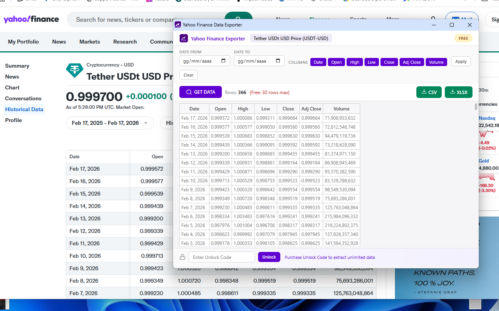
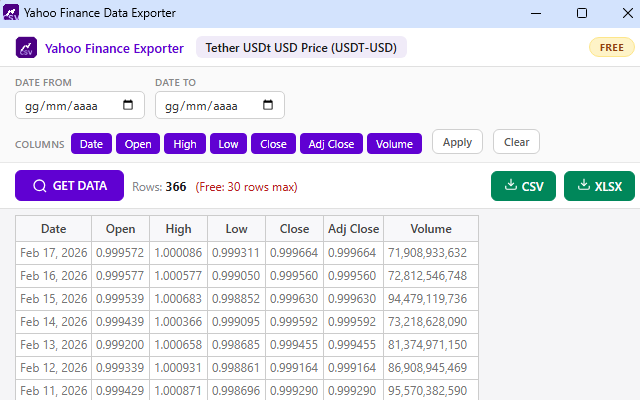

Yahoo Finance Data to CSV/Excel Exporter
Export historical stock data from Yahoo Finance to CSV and Excel in just a few clicks 📊. With Yahoo Finance Data to CSV/Excel Exporter, you can capture complete price history tables — including Date, Open, High, Low, Close, Adj Close, and Volume — and download them as professionally formatted files, ready for analysis.
No more copy-pasting data into spreadsheets or struggling with Yahoo Finance's native download limitations. This lightweight Chrome extension reads the historical data table directly from the page, displays it in a clean popup with a live preview, and lets you export to CSV or Excel (.xlsx) with a single click. The exported Excel file even includes the stock name as a bold title row at the top — perfect for organizing files across multiple tickers.
One of the most powerful features is the built-in filtering system 🔍. Set a custom date range to export only the period you need — last month, a specific quarter, or the entire available history. You can also toggle individual columns on or off before exporting: if you only need Date and Close prices for a simple chart, just deselect the rest. Filters apply both to the preview table and to the final downloaded file, so you get exactly the data you want without any post-processing.
The extension works with automatic page detection 🚀. You don't need to navigate to the History tab manually. Just click the extension icon from any Yahoo Finance quote page — summary, financials, analysis, or options — and it will automatically redirect to the historical data page, extract the data, and display it in the popup. It's that simple.
Available in both FREE and PRO versions 💎. The free version gives you full access to all features (filters, column selection, CSV and Excel export) with a limit of 30 rows per download — ideal for quick checks and short-term analysis. Upgrade to PRO with an unlock code to remove the row limit entirely and export the complete dataset, which can include years of daily price history.
📋 How to Use
- Install the extension from the Chrome Web Store.
- Navigate to any stock page on Yahoo Finance (e.g.
finance.yahoo.com/quote/AAPL/). - Click the extension icon in your toolbar — it auto-redirects to the History page.
- The popup opens with all historical data displayed in a live preview table.
- Optionally set a date range and select only the columns you need.
- Click Apply to filter the data.
- Click CSV or XLSX to download the file instantly.
- If data doesn't load, click GET DATA — it refreshes the page and re-syncs automatically.
📷 Screenshots


✨ Key Features
- One-Click Extraction — Reads historical data directly from the Yahoo Finance table, no scraping hacks
- Auto-Redirect — Click from any quote page and the extension navigates to /history/ automatically
- CSV Export — Perfect for Google Sheets, Python, R, and any data analysis tool
- Excel Export (.xlsx) — Formatted spreadsheet with stock name as title row
- Date Range Filter — Export only the period you need (from/to date selectors)
- Column Selection — Toggle Date, Open, High, Low, Close, Adj Close, Volume individually
- Live Preview Table — See the data before you download in a professional popup
- GET DATA Refresh — One button to reload the page and re-sync data if needed
- Freemium Model — Free version (30 rows) with PRO upgrade for unlimited exports
- Persistent License — Unlock PRO once and it stays active across sessions
- Clean & Non-Intrusive — No visible changes to the Yahoo Finance page, no injected buttons
- 7 Standard Columns — Date, Open, High, Low, Close, Adj Close, Volume
🎯 Perfect For
- Investors tracking stock performance over time
- Financial analysts building models and reports
- Students working on finance projects and research papers
- Data scientists collecting datasets for machine learning
- Traders backtesting strategies with historical prices
- Portfolio managers analyzing risk and returns
- Accountants and auditors reviewing historical valuations
- Content creators building financial charts and infographics
- Anyone who needs clean stock data in a spreadsheet — fast
🔒 Privacy & Security
- Works entirely in your browser — no data sent to external servers
- Reads only the visible table on the Yahoo Finance page
- No account required
- No tracking, no analytics, no data collection
- Minimal permissions — only active on finance.yahoo.com
With Yahoo Finance Data to CSV/Excel Exporter, downloading historical stock data has never been faster or easier. Whether you're analyzing a single ticker or building a multi-stock dataset, this extension gives you clean, filtered, professionally formatted files in seconds — no coding, no premium subscriptions, no hassle. 📈
⬇️ Download from Chrome Web Store